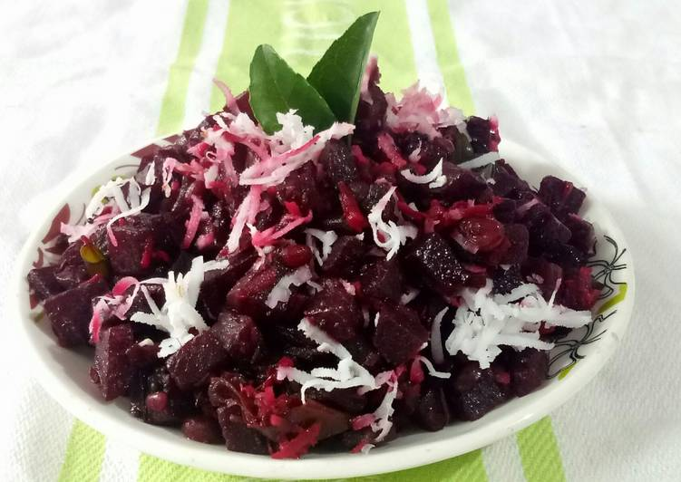

Beetroot Poriyal Recipe
Ingredient
- Beetroot- 250 grms, chopped into small cubes.
- Oil- 2 tablespoons.
- Maggi Masala-ae-Magic- 1 sachet.
- Mustard Seeds- 1/2 teaspoon.
- Chana Dal- 1 tablespoon.
- Urad Dal- 1 tablespoon.
- Dry Red Chillies- 2-3
- Curry Leaves- 8-10
- Turmeric Powder- 1/4 teaspoon.
- Coconut- 1/2 cup, grated.
- Salt to taste.

Methods
- Pressure cook beetroot with 1/2 cup of water for a minute,
after one whistle.
- Heat oil in a karahi and add the mustard seeds. When they start to splutter, add
chana dal, urad dal, dry red chillies and curry leaves.
- When the dal turns golden-brown, add the cooked beetroot and saute for a few minutes.
- Add turmeric powder and salt to taste. Then, add the Maggi Masala-er-Magic and
grated coconut. Mix well and serve hot.